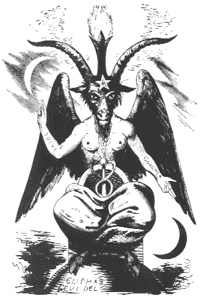
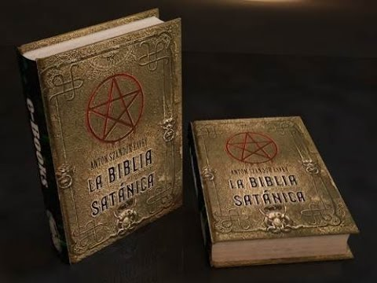

 "Quomodo cecidisti de caelo, lucifer, fili aurorae?! Deiectus es in terram, qui deiciebas gentes!, qui dicebas in corde tuo: 'In caelum conscendam, super astra Dei exaltabo solium meum, sedebo in monte conventus in lateribus aquilonis; ascendam super altitudinem nubium, similis ero Altissimo"
 "La Biblia Satánica (también conocida como la Biblia Negra) es una obra de tipo filosófico-religioso escrita por Anton Szandor LaVey, quien fue fundador de la Iglesia de Satán y el más popular exponente del satanismo contemporáneo. Es una obra que contiene los fundamentos ideológicos, ensayos y rituales satánicos, en los cuales fundamenta las bases de la Iglesia de Satán, movimiento existencialista que LaVey iniciaría en 1966"